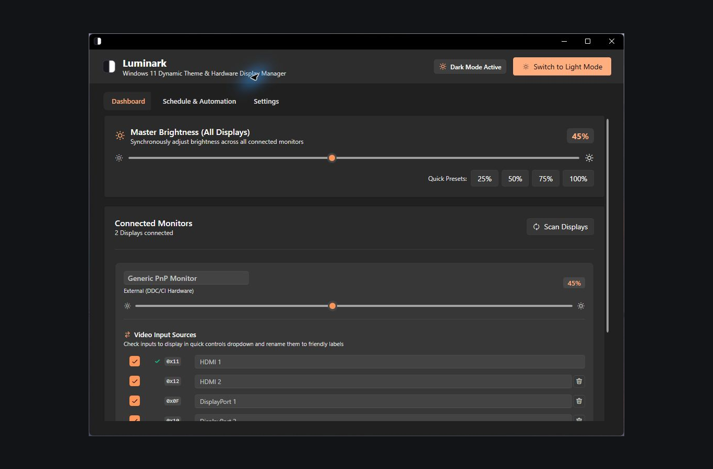
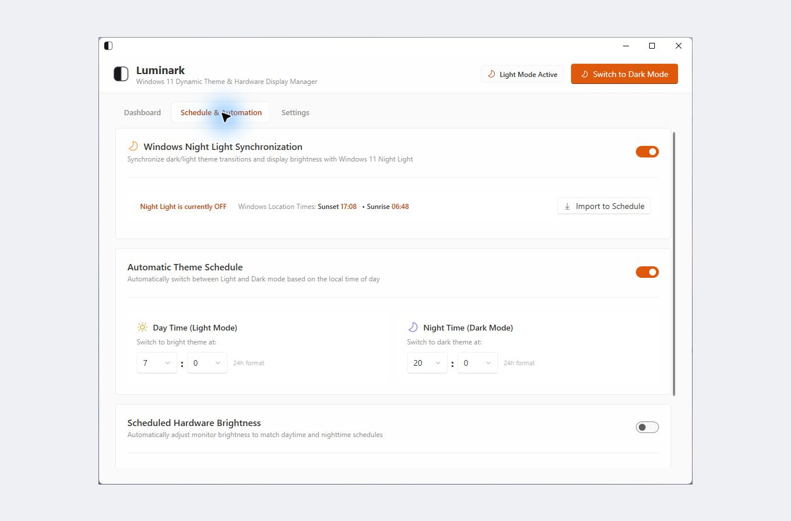

Adjust one screen or all of them
Use the master slider for all screens, or adjust each one separately. Preset buttons make it easy to return to a brightness you like.
Windows 11 · Display & theme control
Adjust your monitor brightness and switch between light and dark mode from the Windows tray. You can set each screen separately, change them all together, or let a schedule take care of it.
External monitors need DDC/CI support. Built-in laptop screens use WMI.

Use the master slider for all screens, or adjust each one separately. Preset buttons make it easy to return to a brightness you like.
Choose when to change themes and brightness, or have Luminark follow Windows Night Light.
Scroll over the tray icon to change brightness. Open the tray window for monitor input and volume controls where supported, or to keep the computer awake or turn the screens off.
Get started
Windows 11. External monitor brightness, input, and speaker controls depend on the monitor’s DDC/CI capabilities; built-in laptop brightness depends on WMI support. Source builds use the .NET SDK pinned by global.json.
The controls you see depend on your monitor and how it’s connected. Some monitors, docks, and adapters don’t support every DDC/CI function.
Inside the app

Made by Silviu Vlasceanu
If Luminark is useful to you, you can leave a tip on Ko-fi. Thanks for supporting my work. Bug reports and contributions help too.